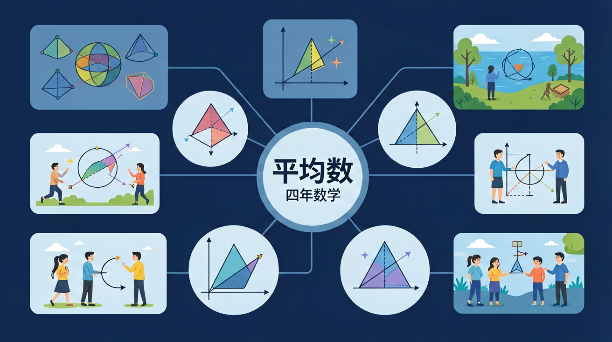

🌍 And（已知）：我们已经学会了加减法和除法，能计算多个数的总和
⚡ But（问题）：但是，当我们想比较两组数据的整体水平时，直接比总数不公平（人数不同），怎么办？
💡 Therefore（新知）：因此，我们引入"平均数"——用总量除以个数，得到一个代表整体水平的虚拟值
🎯 能说出平均数的计算步骤（总和÷数量）
🎯 能判断一组数据的平均数是否受极端值影响
🎯 能计算缺失数据时的平均数（如知道平均分和人数求总分）
完成这些，你就是平均数小达人！
🔓 关卡地图
❓ 为啥算平均数要把所有数加起来再除？
❓ 小明比我高5cm，小红比我矮3cm，我们的平均身高就是我的身高吗？
❓ 考试平均分80分，是不是全班都考了80分左右？
学完这一课，这些问题你都能自信地回答。
先来测一测你已经掌握了哪些前置知识，帮助你更好地学习新内容！
第1题：小明3天读了12页书，平均每天读几页？
第2题：下面哪个运算是求平均数时必须用到的？
And：学生已会加法除法
But：但不懂为何要‘平分’
Therefore：理解平均数的算法意义
平均数就是把所有数加起来，再除以个数。比如小明3次跳绳成绩是80、90、100下，先算总数：80+90+100=270，再除以3次，平均每次跳270÷3=90下。就像把三次成绩匀一匀，每次都当90下算。
🌍 妈妈记录一周买菜花费：周一20元，周二15元，周三25元。想知道平均每天花多少钱？先加总20+15+25=60元，再除以3天，平均每天20元。
小华4次听写得分：85、78、93、80，平均分是？
四年级数学 · 让数字更公平！✨
平均分苹果🍎、平均分糖果🍬，用平均数让一切更公平！今天你将解锁超能力！

用眼睛感受"平均"的力量！
🍎 小明、小红、小华各有苹果，点击"移多补少"让大家一样多！
🤔 点击下面说法，看看哪个是平均数的正确理解：
用公式：平均数 = 总和 ÷ 个数
把数字拖到正确的"均等堆"里！
🎮 班级同学的跳绳个数分别是：
把这些数字拖到"总数格"里，然后算平均数！
⬇️ 将数字拖入框中
从图表中读取信息，算出平均数！
📊 下图是5个同学的数学成绩，找出他们的平均分！
集齐智慧和技巧，打败Boss！
记录本周每天用水量(吨)，分析用水规律
同学们，平均数虽然很厉害，但有时候也会"说谎"哦！比如班里10个同学，9人考了90分，1人考了10分，平均分是82分——这个数字就不能代表大多数人的水平。这就是平均数的"盲点"：当数据特别高或特别低时，它会像被拽歪的橡皮筋一样失真。你想想，如果医生只看平均体温给人治病，是不是可能漏掉发烧的病人？所以我们还要学会看"中位数"（中间那个数）和"众数"（出现最多的数），就像侦探破案要收集三条线索才可靠！
生活实例：小明的奶茶店周一卖20杯，周二到周五每天卖100杯，周末每天卖200杯。如果他说"平均每天卖110杯"，其实工作日根本卖不到这么多，这个平均数就被周末的高销量"拉上去"了。
想知道3000年前没有计算器的时候，埃及人怎么给金字塔工人发工资吗？他们用"削高补低"的土办法！比如记录5人每天运的石块数是3、5、7、2、8块，就把最多的8块砍下一部分，补给最少的2块，最后大家都变成5块——这就是最早的"移多补少"思想。中国汉代《九章算术》里管这叫"平分术"，用来分配粮食特别公平。说白了，平均数就像个善良的魔法师，把多的变少点，少的变多点，最后大家都一样多。你猜古人会不会用绳子打结来记数呢？
生活实例：过年时爷爷给孙辈发压岁钱，小明100元、小红80元、小兰120元，后来爷爷说"每人平均100元"，就把小兰多的20元补给小明，这就是最古老的平均算法！
平均数就像"移多补少"——把高的降低，把低的填高，最终大家一样高。它代表整体水平，但不等于任何一个真实数据。
💡 用"迁移它"的视角：想想这个知识在哪些生活场景中还会用到？
And：已会计算平均数
But：不会在图表中应用
Therefore：建立数形结合思维
看柱形图时，平均数就像一根‘平衡线’。比如4个同学身高柱形分别是120cm、130cm、140cm、150cm，先算出平均（120+130+140+150）÷4=135cm。想象把高的柱子切下来补到矮柱子上，最后所有柱子都会变成135cm高。
🌍 班级图书角每周借书量柱形图：第一周15本，第二周25本，第三周20本。平均线画在20本位置，说明每周大约借20本。
根据柱形图（5天温度：22℃、24℃、26℃、28℃、30℃），平均温度是？
先独立作答，再点选项查看对错与错因。
第一组的平均成绩是多少？
比较两组表现的正确方法是？
第二组有同学请假，实际只有4人参赛，新平均数如何变化？
若第三组平均成绩是90下，5人共跳了____下
答案：450
平均数×人数=总数，90×5=450
第一组转来1名新生后，6人共跳525下，新平均数比原来____(填'高'或'低')
答案：低
原总数435+新生<525时平均数下降
完成学习后，用这两道题检验你对"平均数"的掌握程度！
第1题：5个数的平均数是8，这5个数的总和是多少？
第2题：平均数一定是数据中实际存在的某个值吗？
回忆：今天学了哪些关键词和规则？试着说出来。
用自己的话解释今天学的核心概念，不看书能说清楚吗？
用今天的知识解决一个实际问题，或写一个新例子。
把今天的知识与已有知识联系起来：有什么共同点？有什么区别？能不能自己创造一道新题？
✅ 必须所有数据相加再除总个数
💡 混淆平均数和中位数计算
✅ 先统一成米或厘米再计算
💡 单位换算意识薄弱
口诀：总数除以份数，平均分配不马虎
类比：就像把果汁平均倒进每个杯子，每杯一样多
了解更多，成为统计小专家！
班级平均分80分，但有同学得了60分，有同学得了100分。
平均数只是"整体水平"的代表，不代表每个人都是80分哦！
小明5次数学测试成绩：70, 80, 90, 85, 75。
他的平均成绩是多少？如果第6次要把平均成绩提高到85分，第6次要考多少分？